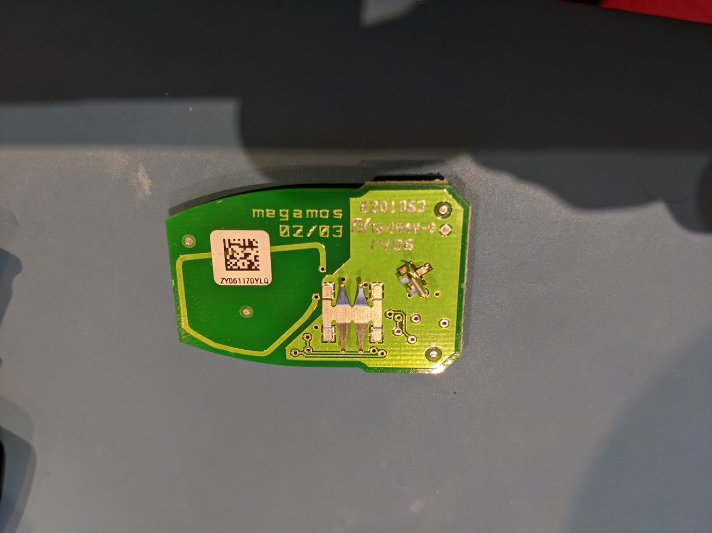
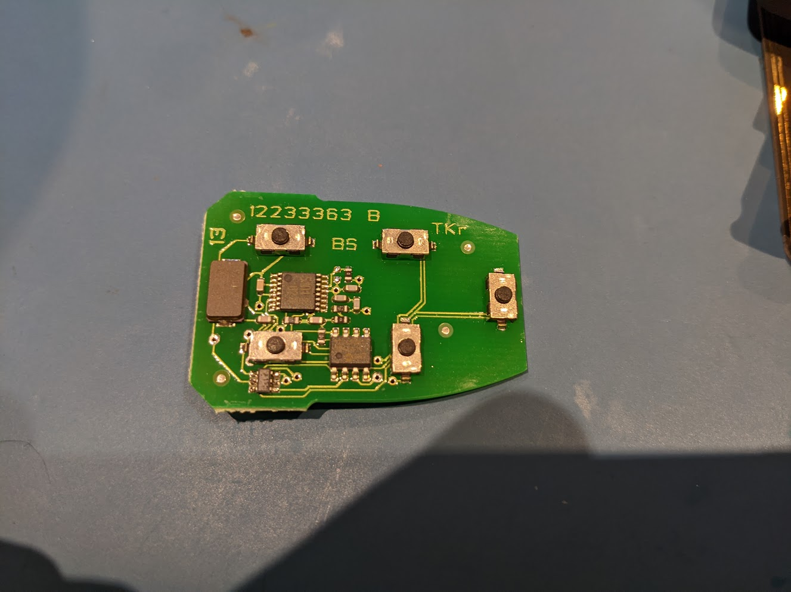
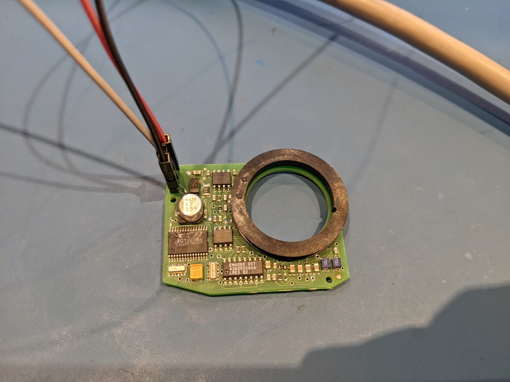

Keys¶
CEM EEPROM:
From the xx256 MCU eeprom. I found based on some other forum posts where the keys are stored (transponder portion at least). They are each 4 bytes and there are a maximum of 6 keys that can be added to the car.
YV1MS682442020566 MCU2 EEPROM (4K)
I do not know if there are any checksums on this.
Above you can see that the vehicle has 4 transponders/keys added, with two sets of 4 bytes blank for slots 5 and 6. On the ICM display, if I go into the information section it also reports there are 4 keys.
The keys I believe are ID48 Megamos transponders.
Key Fob:¶
There is the active component that I believe transmits at 315MHz when you push the buttons. This is picked up by a receiver on top of the DIM (Cluster). The passive part is in the plastic housing, a small glass RFID transponder that when inserted into the ignition is verified.
 Ignition Transponder Reader:¶
This is a 3 wire device, 12V, GND and LIN. The LIN bus is shared with the SCL (Steering Column Lock) module, which are both connected to the CEM.
